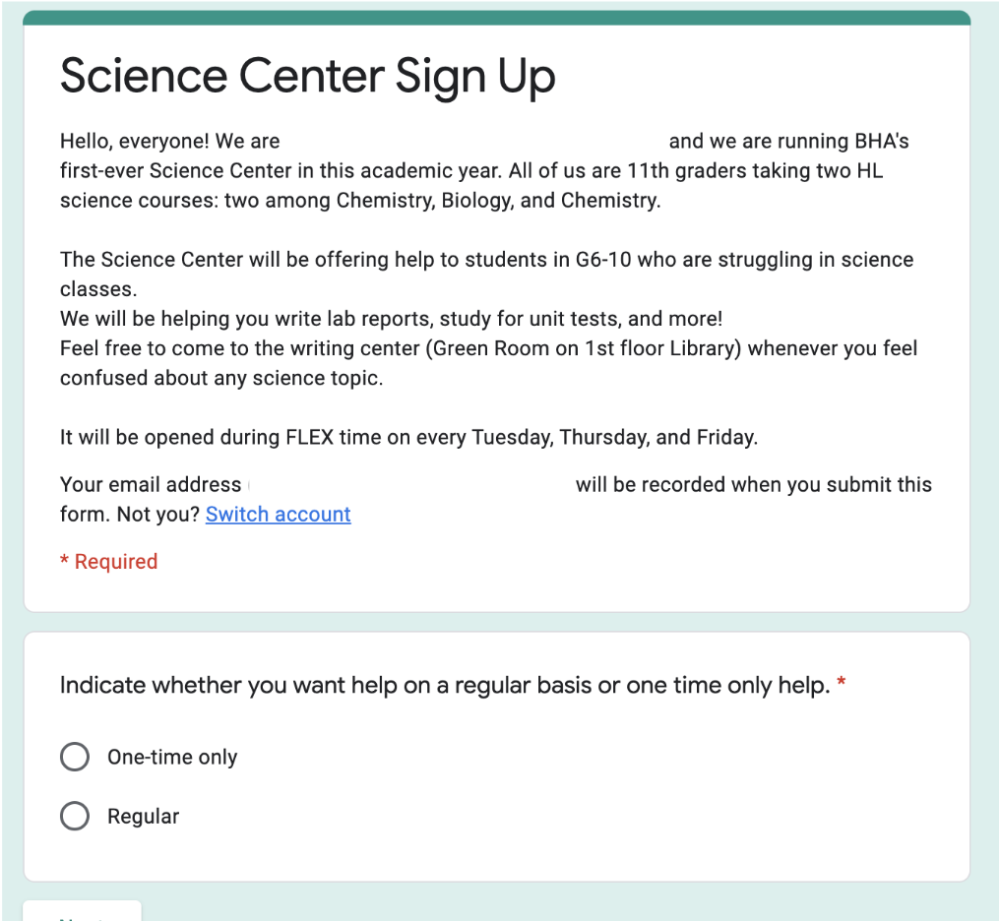
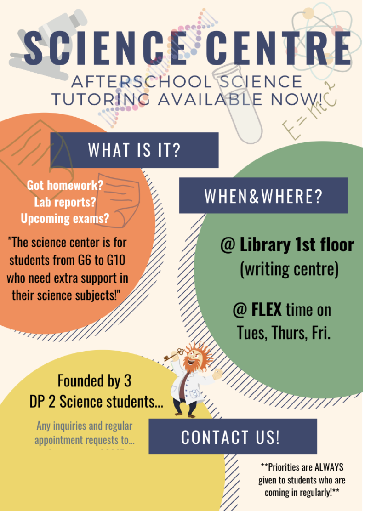
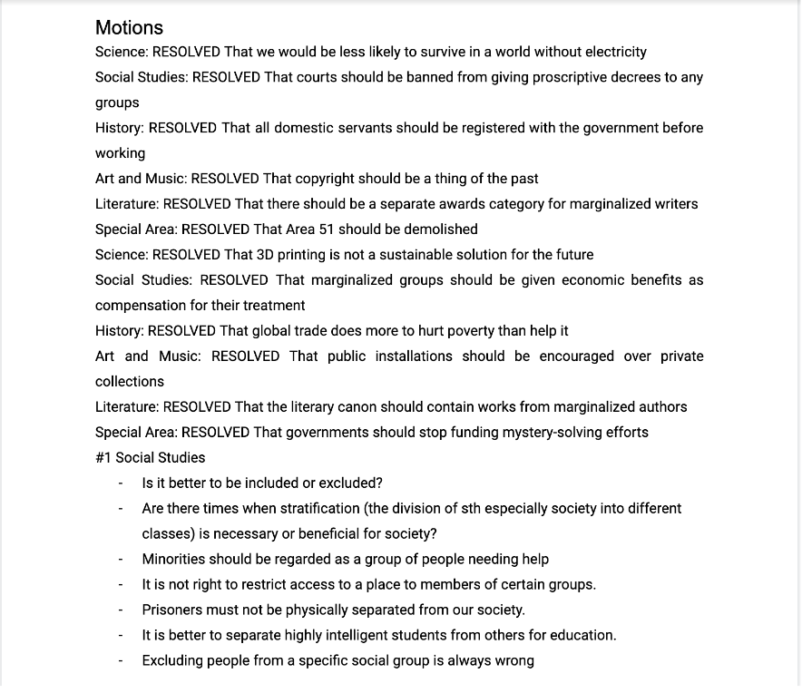
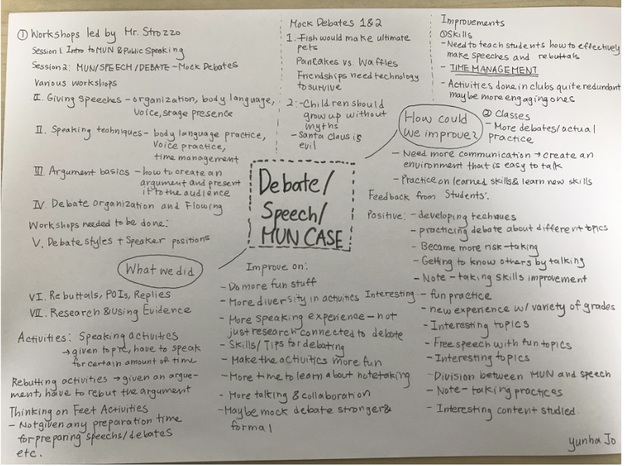

Ross Mathematics Camp
Studied Number Theory. Took part in online family meetings, watched lectures on subjects, and worked on problem sets.
Studied Number Theory. Took part in online family meetings, watched lectures on subjects, and worked on problem sets.
Co-created my school’s first support group to tutor peers struggling in science courses. Supported various students who had troubles with understanding the content, writing lab reports, and preparing for a test.
 Co-organized a debate club within the school Co-led the debate club to train students to become debaters and public speakers by leading various speaking activities.
 Competed in various math competitions including America Math Competition, United Kingdom Mathematics Trust, Waterloo Competition, and American Regions Mathematics League.